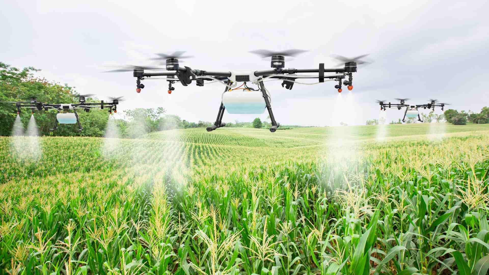

Precision agriculture is a farming management concept based on observing, measuring and responding to inter and intra-field variability in crops. The goal of precision agriculture research is to define a decision support system (DSS) for whole farm management with the goal of optimizing returns on inputs while preserving resources. The practice of precision agriculture has been enabled by the advent of GPS and GNSS. The farmer's and/or researcher's ability to locate their precise position in a field allows for the creation of maps of the spatial variability of as many variables as can be measured.
© 2016 Agrox. All rights reserved | Design by W3layouts